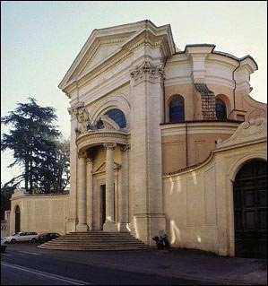
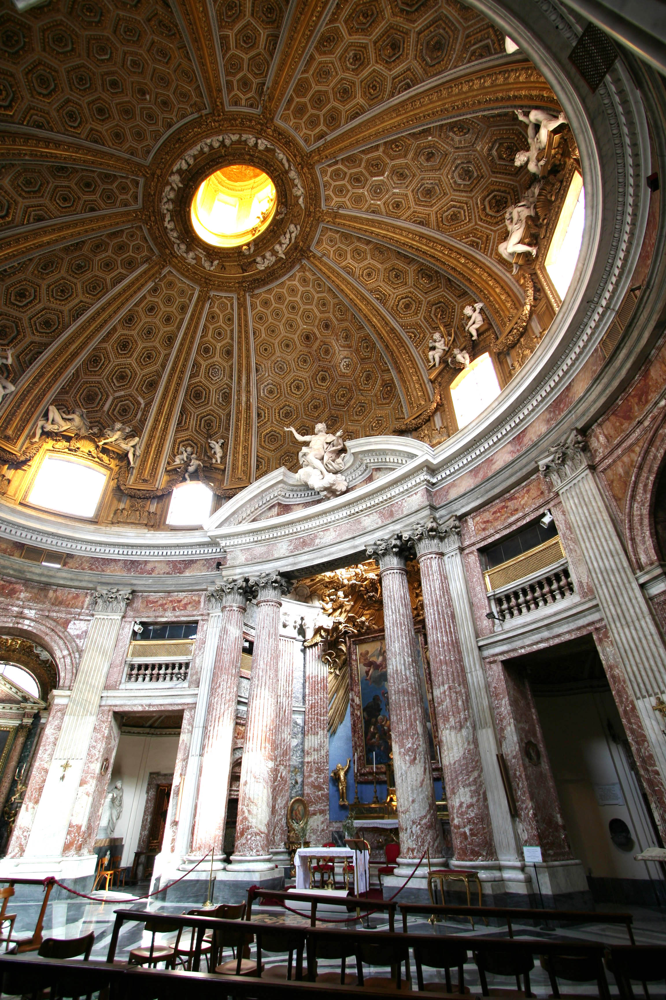
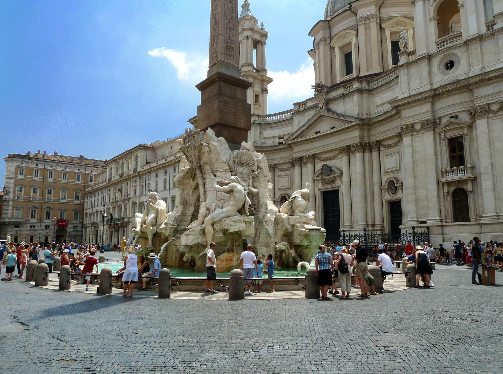
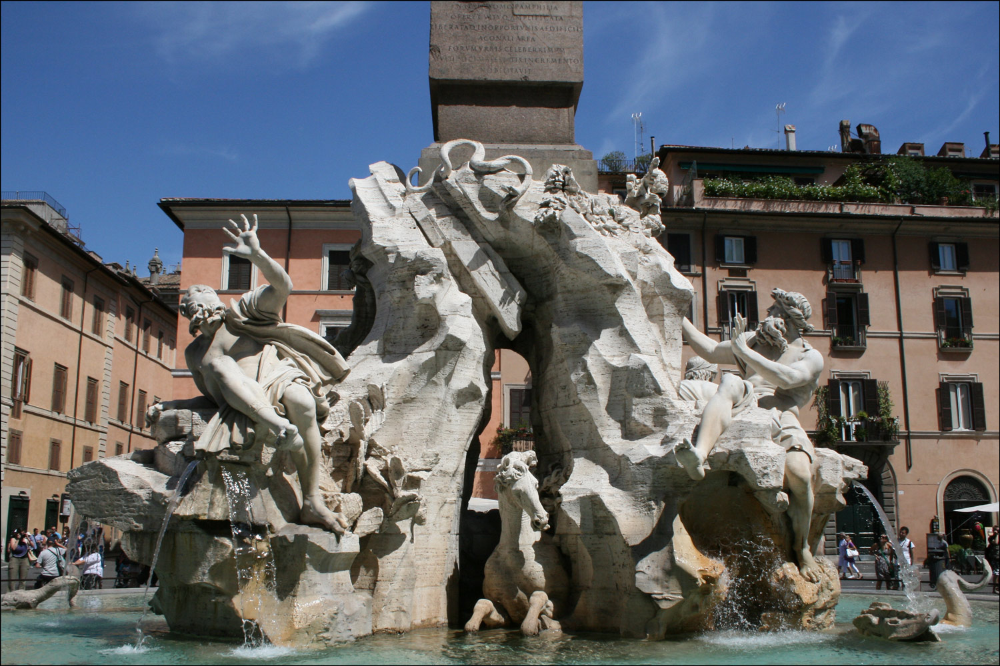

Introduction
The look of the Eternal City as we know it today was changed forever by the artistic genius of Gianlorenzo Bernini. Below we will explore some of his greatest works in Rome.
Chapel's/Churches/Plazas:
Ecstasy of St. Teresa

Sant'Andrea al Quirinale
Exterior: Sant'Andrea al Quirinale
Interior: Sant'Andrea al Quirinale
Fountain of the Four Rivers
 Statues:
The following statues are all found in Villa Borghese.